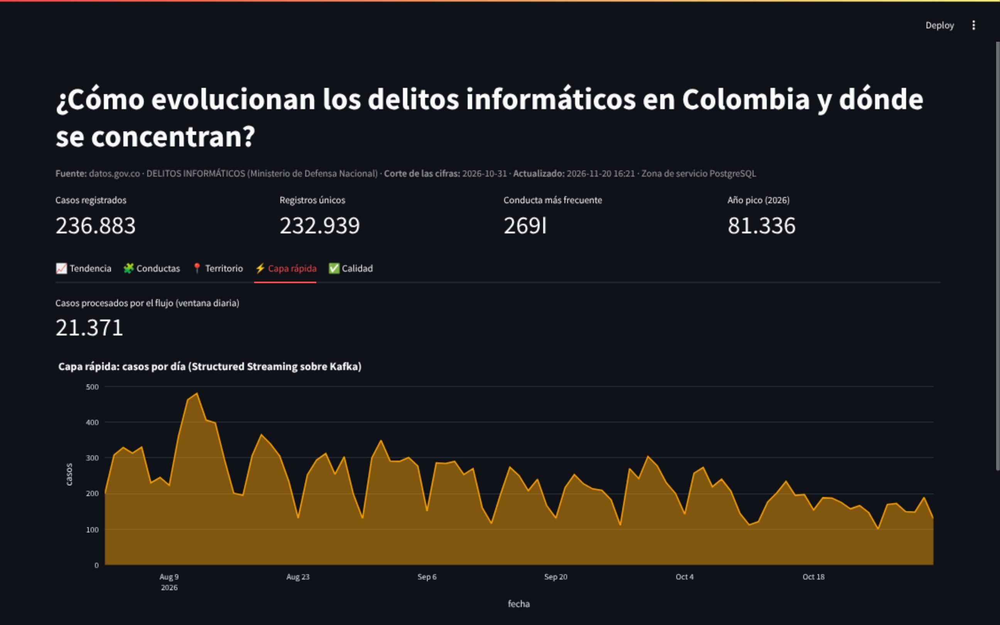
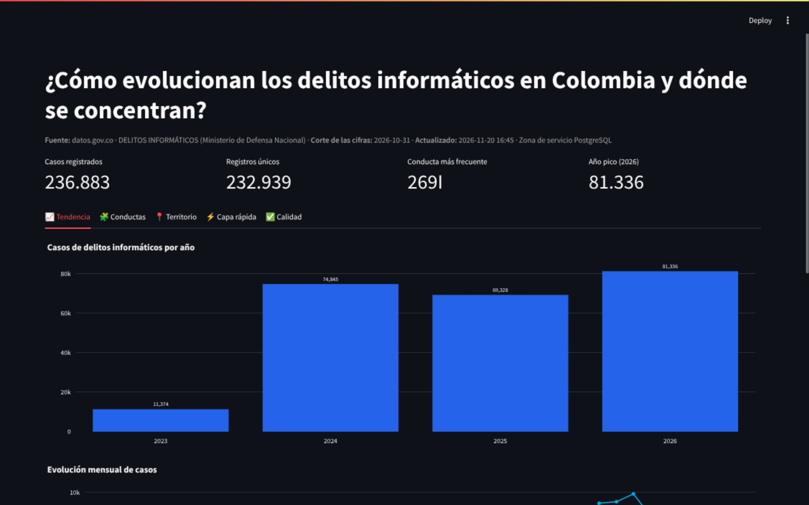

Pipeline Lambda con Kafka, HDFS, MapReduce, PySpark, PostgreSQL y Streamlit
Alejandro Ramírez · Gestión de Datos Masivos G002
Pregunta: ¿cómo evolucionan los delitos informáticos en Colombia entre 2023 y 2026 y en qué conductas y territorios se concentran?
Fuente: datos.gov.co · DELITOS INFORMÁTICOS · MinDefensa · CC BY-SA 4.0
Kafka delitos-stream (90 días) → Structured Streaming con ventana diaria, watermark y checkpoint en HDFS → upsert en PostgreSQL.
El histórico es batch (correcciones, Parquet, MapReduce); la cola reciente es streaming. La zona de servicio une ambas y el tablero no calcula.
:id.232.939 registros · 5 páginas · 113 MB · 58 s
delitos-raw con 3 particiones.key = id_registro, acks=all.delitos-hdfs-writer: commit después de escribir el lote.232.939 mensajes · 20 s · lag 0
/data/delitos_informaticos ├── raw/fecha_ingesta=2026-11-20/ │ lote-…-00000.jsonl … (47) ├── curated/anio=2023 … 2026/ ├── mapreduce/conteo/ └── checkpoints/stream_diario/
| Métrica | Valor |
|---|---|
| Claves comparadas | 48 |
| Diferencias | 0 |
| Filas totales (MR) | 232.939 |
| Filas totales (Spark) | 232.939 |
Mapper y reducer en Python 3
Un archivo por lote de 5.000 mensajes, no uno por mensaje.
| Zona | Tamaño |
|---|---|
| JSONL en HDFS | 113,5 MiB |
| Parquet | 11,7 MiB |
| Reducción | 89,7 % |
Partición anio: 4 carpetas, consultas del tablero por año, sin miles de archivos pequeños.
3 críticas detienen el pipeline (conteo, nulos clave, id repetido). Reporte con descartados.
| Corrida | API | Dup. | Curado | Casos |
|---|---|---|---|---|
| 1.ª | 232.939 | 0 | 232.939 | 236.883 |
| 2.ª | 130 | 130 | 232.939 | 236.883 |
Marca de agua = última fecha cargada. Se reprocesa el último día para capturar correcciones; la llave elimina repetidos.
delitos-stream: últimos 90 días (21.371 eventos).(fecha, codigo).| Corrida | Filas | Casos |
|---|---|---|
| 1.ª | 669 | 21.371 |
| Reinicio | 669 | 21.371 |

Mismos offsets, mismas filas: no reprocesa ni duplica. El agregado del flujo coincide con el batch (0 diferencias).

Streamlit + Plotly · sin Power BI · Linux
Fuente y fecha de corte visibles en el tablero. Repositorio con README, notebook ejecutado y evidencias.
docker compose up -d --wait && bash run_pipeline.sh